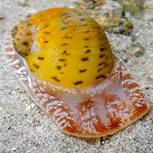

|
|
| shelled snails text index | photo index |
| Phylum Mollusca > Class Gastropoda > Family Naticidae |
| China
moon snail Naticarius onca Family Naticidae updated Aug 2020 Where seen? This moon snail with a spotted shell and intricately patterned body is sometimes seen on clean sandy shores on some of our Southern shores. Elsewhere it is found offshore on sandy bottoms. It was previously called Natica onca. Features: 1.5-2cm. Shell smooth thick spherical (not flat) with the spiral tip sticking out a little. Shell pattern beige usually with 5 spirals - white with dark brown bars, sometimes the white is not so obvious. On the underside, a small circular depression. Operculum plain pearly white (no markings), with several fine grooves. Foot transparent with a white margin and a pattern of white bars and red spots, front part of the body white with four wide red or orange bands (which appear as large spots when the animal is fully expanded). Tentacles short, red. Snail takeaway? Some have been seen 'dragging' a small snail shell behind them attached to the foot. Is it taking the meal away to some other place to eat it in safety? |
 Spiral tip sticking out a little. Cyrene Reef, Aug 11 |
 Small circular depression on underside. Operculum shelly with regular grooves. Sisters Island, Nov 11 |
 Dragging a small shell behind. Cyrene Reef, Aug 11 |
| China moon snails on Singapore shores |
On wildsingapore
flickr
|
| Other sightings on Singapore shores |
. |
 Cyrene Reef, Sep 20 Photo shared by Vincent Choo on facebook. |
Cyrene Reef, Sep 20 Photo shared by Vincent Choo on facebook. |
| Filmed on Cyrene
Reef Aug 2013 |
Links
|